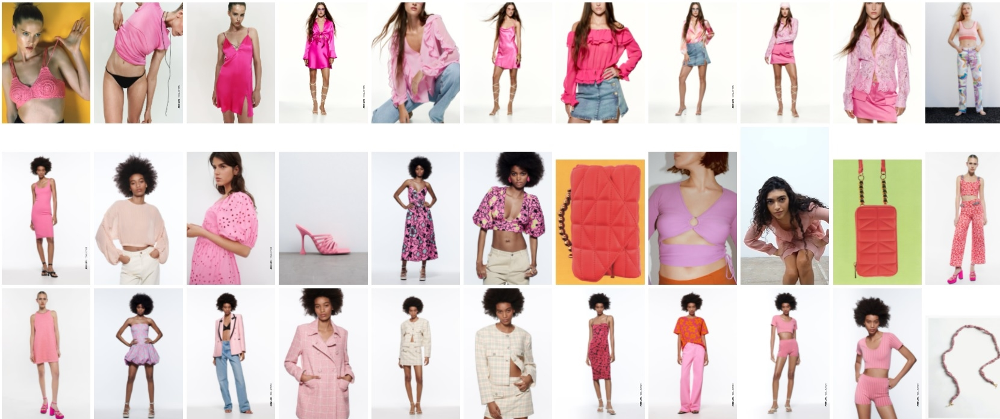
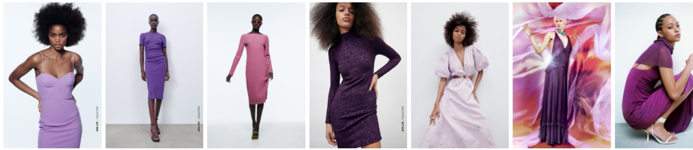
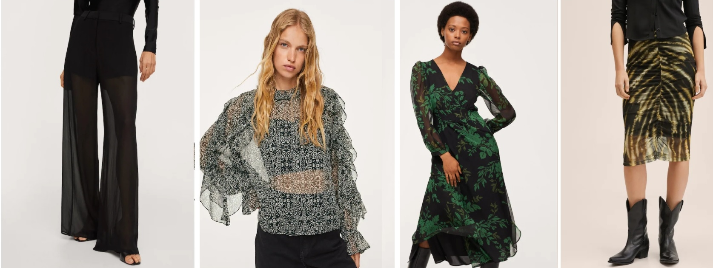
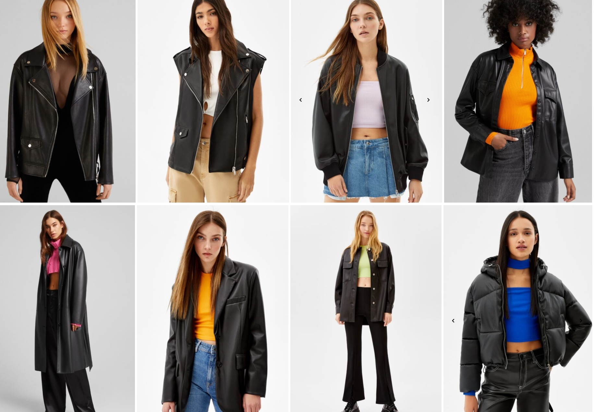

¿Qué vamos a vestir esta próxima temporada?
Inspirándome en las prendas de moda, los colores y estampados más populares,
aquí te dejo las tendencias que más veremos esta primavera y verano.
El Rosa
En todas sus gamas posibles, un color favorecedor que podremos combinar con
cualquier básico. Esta primavera-verano se seguirán llevando los vestidos fucsia
o trajes de chaqueta rosa palo. Sin embargo, también podremos ver este color combinado
con otras tonalidades como verdes o azules.

El color de Pantone
Según el Instituto del Color podríamos decir que este colar entre el azul y el morado,
se catalogará como el color del momento y lo veremos en nuestros armarios esta temporada,
desde vestidos largos de noche hasta ropa de deporte. Todo un boom de la moda.

Las transparencias
Aprovechando que se acerca el verano y el calor, los tejidos que dejan ver el cuerpo se
abren paso en nuestros armarios. Con bordados entremezclados con flores en los vestidos o
incluyendo un forro corto en las faldas largas y pantalones anchos, los mejores diseñadores
apuestan por la creación de estas prendas delicadas y estilosas.

La cazadora de cuero oversize
La cazadora de cuero se caracteriza durante esta primavera 2022 por la silueta oversize.
La encontraremos en varios formatos de color negro, tanto la clásica americana de corte masculino con hombreras,
como la mezcla entre lo rockero y lo inocente con mangas abullonadas.

La tendencia Color-Block
A pesar de que el negro sea un clásico de nuestro armario sea la temporada que sea, la tendencia Color Block
ha resurgido pisando fuerte. Por ello, los diseñadores han apostado por la mezcla de tonalidades vivas, siendo
la más popular la tendencia del color block del morado y el rojo. Además, en las pasarelas de Prada se han
podido ver el verde menta junto con el lila y el amarillo o
con el verde khaki, y los azules intensos con los tonos burdeos.
Si quieres saber cómo combinarlo, no te pierdas el siguiente vídeo publicado por Vogue.